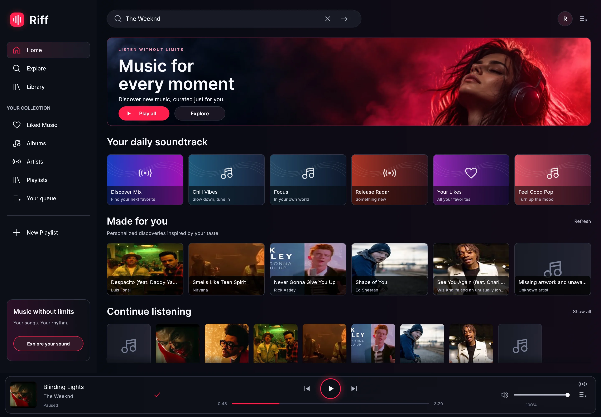

Follow a good song.
Search songs, albums, artists, and playlists. Start song radio to find something that belongs beside your favorites.
YOUR MUSIC. YOUR DESKTOP.
A little familiar. Something new.
A native music client for YouTube, built in Rust
and made for the way you listen.
Free & open source In active development

SETTLE IN. PRESS PLAY.
From the first search to the last song in your queue,
keep the music close.
Search songs, albums, artists, and playlists. Start song radio to find something that belongs beside your favorites.
Save favorites, keep albums and artists close, and build local playlists. Your collection stays on your device.
Shape your queue, jump between tracks, and control playback in a dedicated desktop app.
OPTIONAL GOOGLE CONNECTION
Connect your Google account to bring your YouTube likes, subscribed channels, and private playlists into Riff.
Google account connection is currently limited to approved testers. Search and playback do not require Google sign-in.
A FEW THINGS TO KNOW
Yes. Riff is a free project, and its source code is available on GitHub. The application is licensed under MIT.
Riff is currently in development, with a native macOS build workflow in the repository. Visit the project on GitHub to follow development and inspect the code. A packaged public download is not available yet.
The Google connection only reads account data. Favorites and playlist edits made in Riff are stored locally and do not change your YouTube account.
No. Riff is an independent project by Mert Meral. It is not affiliated with or endorsed by Google or YouTube.
BUILT WITH CARE. SHARED FREELY.